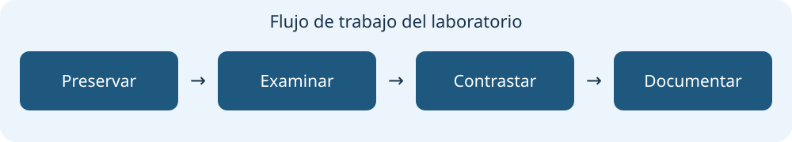

Herramientas para el laboratorio Tsurugi
Selección docente · funciones, ejemplos y límites

Buscar herramienta o función
Categoría
Todas las categorías
Recursos
Listado de herramientas Tsurugi 26.03
Documentación Tsurugi
Follow the White Rabbit — enlace aportado por el docente
(contenido no revisado)